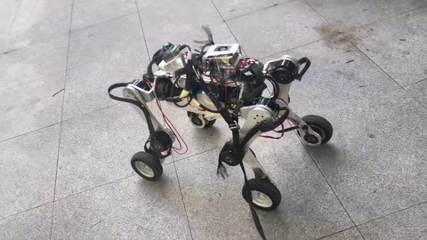
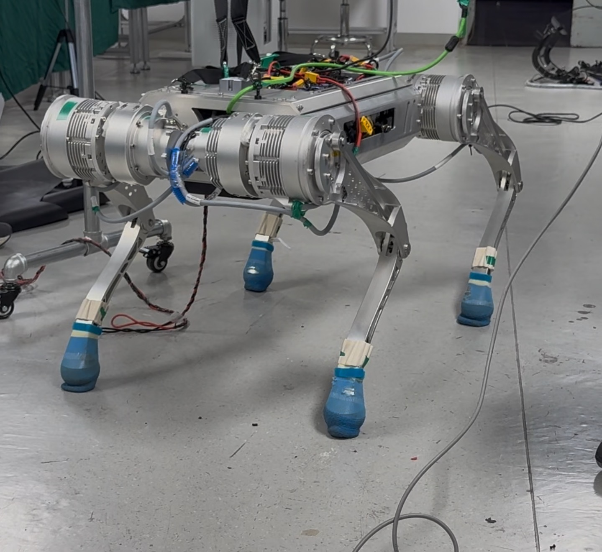

Robotics · real-robot control · Sim2Real
Robotics Research Portfolio
I am an undergraduate robotics engineering student working on reliable locomotion, Sim2Real deployment, and real-time uncertainty in physical robot systems. My recent work spans a 25 kg wheel-legged robot and a 55 kg EtherCAT quadruped.
When timing slips, the plant changes. I am interested in making that systems fact measurable and useful for control.
Selected hardware work
Two control stacks, examined on real robots.
These project pages focus on what I built, how the control path was instrumented, and the evidence retained from deployment.

25 kg wheel-legged robot
PPO deployment through ONNX, Linux shared memory, dual MCUs, and four CAN buses for 16 actuators.

55 kg EtherCAT quadruped
From a PPO policy to 12 CiA-402 torque drives, with desired-versus-measured joint traces used for diagnosis.
From deployment to research
Questions I hope to explore in doctoral study.
Deployment experience has made me interested in controllers that account for what was observed, when it was observed, and how confidently the current state can be estimated.
- 01Timing-aware state estimation
How can timestamps, action history, jitter, and missed cycles inform a current-state estimate? - 02Failure-adaptive control
When should uncertainty change an RL or MPC controller's action, speed, or risk level? - 03Hybrid locomotion on hardware
How do contact changes, wheel motion, and real transport delays interact in a complete loop?